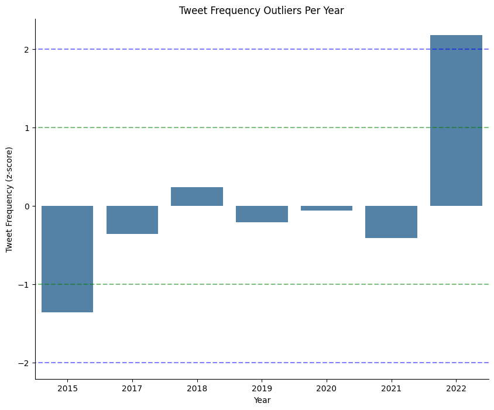
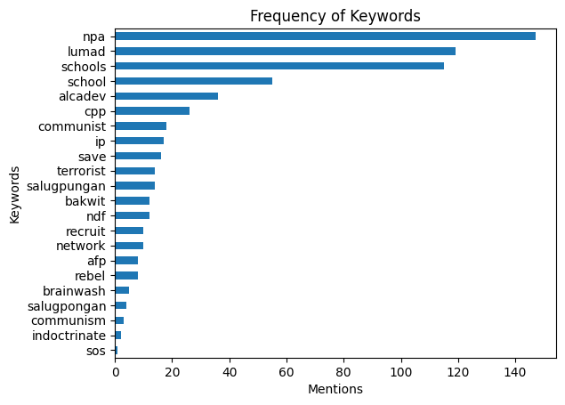

We explored the data we collected.
While this section summarizes our findings, you can check our code here:
While this section summarizes our findings, you can check our code here:
This phase involves cleaning the data to ensure that they are consistent and complete, as well as preparing the data for modeling and further analysis. The following steps were taken to preprocess the data:
The columns "Views", "Account Bio", and "Location" were dropped as they have missing values. The columns "Collector", "Rating", "Reasoning", and "Remarks" were also dropped as they are only relevant for the data collection portion of the project. All other columns in the dataset have complete values.
The date values in the "Date posted" column were formatted to ensure consistency. The format followed is DD/MM/YY HH:MM.
The values in the "Account type" column are categorical data. These were encoded into numerical values as 0 for Anonymous, 1 for Identified, and 2 for Media. This encoding is added as a new "Account type category" column.
The frequency of tweets per year were scaled around the mean with a unit standard deviation. Here, we considered outliers to be values which exceed 3 standard deviations from the mean. From this definition, the resulting graph shows that there are no outliers among the number of tweets for each year. Most years have tweet frequencies that fall below one standard deviation from the mean, with the exception of the years 2015 and 2018 which exceed 1 and 2 standard deviations, respectively.
Punctuation marks were removed so that the texts could be parsed and the tweet contents could be analyzed better. Then, the words most frequently mentioned were taken and plotted .
The tweets collected were grouped into yearly, daily, and 6-hour intervals. Most of the tweets collected were made in 2018, while no tweets were collected from the year 2016. Tweets were usually created on Fridays from the 18:00-23:59 time period.

A scatterplot was used to display the relationship between tweet engagement and tweet content type, as well as tweet engagement and year posted. The engagement value is further discussed in the Feature Generation section.
The first scatterplot shows us that tweets under the Rational type have the highest engagement, while tweets under the Transactional type have the lowest engagement. This implies that users engage more with tweets that are informational or educational.
The second scatterplot shows us that tweets made in recent years, specifically 2020 and 2022, have the highest engagement


A heatmap was used to display the correlation between a tweet's likes, replies, retweets, quote tweets, and engagement, and the number of followers of the account that posted the tweet. While there is a positive correlation between the engagement and followers, this is considered to be a weak correlation. This implies that tweets made by accounts with a high number of followers do not necessarily mean that their tweets have high engagement. Moreover, out of the four contributors for engagement, it can be noticed that retweets and likes have the highest correlations. This can mean that users may be more influenced to retweet and/or like a tweet if the author is well-known.

We chose to visualize the frequency of the keywords used to search for the tweets using a bar graph. Other than the words 'lumad'/'ip', and 'npa'/'cpp', which are directly part of our research question, we found that 'school/s', 'alcadev', and 'salugpungan'/'salungpongan' were mentioned frequently. Other prominent words were 'save our schools' (collectively), 'communist' and 'terrorist'.
The following line graphg shows the trend for the frequency of mis/disinformation tweets concerning the redtagging of Lumad from the years 2015 to 2022. From 2015, the number of these tweets are seen steadily increase until it hits its peak in 2018. From then on up to the year 2022, the frequency of tweets appears to be fluctuating every year.
Features of the dataset were analyzed to determine which are relevant to the project and can produce additional insights.
Additional columns for which day of the week the tweet was posted and the engagement of the tweet were added to the dataset as the "Day" and "Engagements" columns respectively. The tweet engagement value was calculated by taking the sum of each tweet's likes, replies, retweets, and quote tweets. These features were included for further analysis on the data collected.
You can add more information about the team members here.